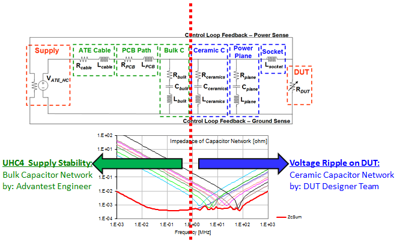

Two areas of expertise in PDN design
Designing a capacitor network is generally a cooperation between the DUT designer team and the Advantest engineer. Basically, there are two areas of expertise and responsibility:
- The bulk capacitor network
The Advantest engineer will provide the stability of the UHC4 / UHC4T power supply by appropriate design of the bulk capacitors for the overall capacitor network.
- The ceramic capacitor network
Since each DUT signal has different specifications, which only the DUT designer team is aware of, it is the DUT designer team's responsibility to provide the ceramic capacitor network portion of the overall capacitor network design.

If required, the Advantest engineer can participate in the design of the ceramic capacitor network and supply further knowledge, expertise and best practice advice for the ceramic capacitor network, the power plane and the socket design.
Functional changes
- Introduced in SmarTest 7.2.2